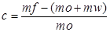
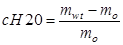

International Journal of Environmental Pollution and Remediation (IJEPR)
ISSN: 1929-2732

Volume 1 - Year 2012 - Pages 38-43
DOI: 10.11159/ijepr.2012.006
Effect of Activation of Date Palm Kernel Powder on the Remediation Process of Oil Polluted Water
Essam Al Zubaidy
Chemical Engineering Department/College of Engineering,
American University of Sharjah, United Arab Emirates
izubaidy@aus.edu
Abstract - The effect of activation process of date palm kernel powder was studied for remediation of oil polluted water. Date palm kernels were washed, dried, crushed and carefully activated to be suitable as sorbent for oil spill. Four types of date palm kernel powder were used; date palm kernels powder (DPKP) without any activation, thermally carbonized DPKP (CDPKP), acid activated carbonized date palm kernel powder (AACDPKP), and ZnCl2 activated carbonized date palm kernel powder (ZnCl2CDPKP). It was found that the type of activation of DPKP had a significant effect on oil sorption capacity. It was found that ZnCl2CDPKP had the highest sorption activity among others while DPKP without activation got the lowest oil sorption capacity. Oil sorption capacities were 3.25 g/g, 4.14 g/g, 4.35 g/g, and 4.48 g/g for DPKP, CDPKP, AACDPKP, and ZnCl2CDPKP respectively. Oil retention and sorbent reusability were studies. The reusability was studied for 10 cycles. The oil sorption capacity was reduced by 19.7-32% of total adsorbed oil. The performance of these sorbents was compared with other biomass materials from other work.
Keywords: Oil Spill, Date Palm Kernel Powder, Activation Process, Oil Sorption Capacity, Oil Retention and Reusability
© Copyright 2015 Authors - This is an Open Access article published under the Creative Commons Attribution License terms. Unrestricted use, distribution, and reproduction in any medium are permitted, provided the original work is properly cited.
1. Introduction
More than 50% of total crude oil comes from Arabian Gulf area from onshore and offshore wells [1]. There were 550 oil spill incident reported in Arabian Gulf with a total of 14,000 barrels in the period 1995-1999 [2]. Oil contamination may occur in water as well as on land. Contamination may cause serious problems to public and environment. Many authors tried to find an efficient and economical way of remediation using available local materials. The removal of crude oil from contaminated ground water using powdered and granular activated carbon was studied [3]. They added different amount of adsorbent on the surface of contaminated water for 7 days, after which the total petroleum hydrocarbon (TPH) was measured. Sodium chloride was added on the 8th day to serve as a coagulant to facilitate the removal of fine carbon particles. The removal of oil reached 99.9%. Walnut shell media was used as sorption material [4]. The sorption capacity was 0.56 g/g of mineral oil in aqueous medium and 0.30 g/g for pure mineral oil. Activated carbon powder was also produced by treating coconut fiber with ammonium chloride and carbonized at 400oC [5]. The treatment was done to improve the surface area and the adsorption site of the carbon. The activated carbon was characterized in terms of pH, surface area, loss on ignition, moisture content and bulk density. The removal of diesel and kerosene from aqueous solutions was measured by a change in chemical oxygen demand test. The removal efficiency was less than 45% corresponding to about 6.8 mg / l / g decreases in (COD). The removal of diesel and kerosene from aqueous solution followed a pseudo first order rate law. Thermally carbonized raw pith bagasse was used to study the sorption capacity of oil and water pickup [6] - [8]. The sorption capacity and porosity of activated carbon depends largely on carbonization conditions, morphology and physical state of precursor, i.e. pith bagasse. Thermal carbonization reduces the water pick up from 12.13 g water/g fiber to 0.62 g water/g carbonized fiber. Barley straw was also used as oil sorbent. Oil sorption is dependent on the type of oil. Sorption properties and adequate reusability, indicating that a material based on natural fibers could be a variable alternative to commercially available synthetic materials that have poor biodegradability. Rice husk was used as sorbent material for oil [9]. Rice husks refined and then pyrolyzed at 600–700 oC (1.0 g) adsorbed > 6.0 g of B-heavy oil and <1.5 g of water.
The objective of the current work was to develop new waste biomass available material.Date palm kernel powder was used for remediation of water from oil contamination. This material was crushed and physically and chemically activated. The activated materials need also to be evaluated and compared with other available waste biomass materials.
Table 1. Characteristic of investigated oils.
| Properties | ASTM Method | Crude oil | Recovered crude |
|
Specific gravity@15.6 oC |
ASTM D 1298 |
0.80846 |
0.8012 |
|
API gravity |
ASTM D 1298 |
43.52 |
45.11 |
|
Viscosity @40 oC cst |
ASTM D 445 |
5.749 |
5.56 |
|
Water content, vol. % |
ASTM D 95 |
0.0625 |
Nil |
|
Water and sediment, vol% |
ASTM D 4007 |
0.0625 |
Nil |
|
Carbon residue, wt% |
ASTM D 189 |
0.453 |
0.432 |
|
Ash content, wt% |
ASTM D 582 |
0.0558 |
0.0521 |
|
Asphaltene content, wt% |
ASTM D 3279 |
0.274 |
0.268 |
|
Salt content, ppm |
ASTM D 3230 |
80 PPM |
130 PPM |
|
Sulfur content, wt% |
ASTM D 4294 |
1.01 |
0.78 |
2. Material and Experimental Procedure
2.1 Materials
Crude oil from local resource was used as contaminant for water. The main physical properties of crude oil were summarized in Table (1). All tests were performed according to ASTM standards.Artificial seawater was prepared by adding 3.5% NaCl to tap water. Dates are seasonal fruit products with oval-cylindrical shape of 2.5-5 cm long, and 1.5-2.5 cm diameter. Date palm kernel was collected from locally date palm Packing Company. Sulfuric acid (H2SO4), hydraulic acid (HCl), and ZnCl2 were supplied from BDH Company and used directly without any treatment.
2.2 Experimental Procedure
2.2.1 Date Palm Kernel Powder (DPKP)
The date palm kernels were collected washed with tap water followed by distilled water to be free from dirt, dry at 105 oC for 24 hours, crushed, grinded and sieved for particle size of 710 micrometer and lower. This form was collected and kept in close jar.
2.2.2 Thermally Activation of DPKP (CDPKP)
The DPKP was placed in a steel close chamber and allowed to carbonize using a muffle furnace at 800oC for three hours and allowed to cool and grounded using mortar. The powder was sieved in the sieve shaker and a powder of average size of 710 micrometer and lower were collected and kept in close jar.
2.2.3 Chemically Activated DPKP
2.2.3.1 Acid activation (AACDPKP) using H2SO4
Sulfuric acid (H2SO4) activation of the carbonized date palm kernel powder (CDPKP) was conducted in the three necks 500 ml glass flask [10] - [12].Acid concentration of 2M was prepared and a reflux condenser was attached to prevent any loss of acid and water. The ratio of the mass of powder to the volume of acid solution was 0.1 g/ml. the mixture of acid solution and the carbonized date palm kernel powder in the activation vessel was heated to 98 oC. The activation process was completed in 5 hrs.Magnetic stirrer was provided to agitate the mixture. At the end of the activation the date powder sample was filtered and washed using distilled water. The washing was continued until the solution had no sulphate ions. The activated date palm kernel powder was dried in an over at 105 oC for 5 hrs.
2.2.3.2 Activation with ZnCl2 (ZnCl2CDPKP)
Zinc chloride was dissolved in water and added to CDPKP [13]. The amount of solution was adjusted to obtain the desired ratio of 2:1 zinc chloride (dry basis) to CDPKP. Excess water was then evaporated by heating on a hot plate followed by drying in an oven at 120 oC for 2 hours to remove the last traces of water. The impregnated CDPKP were placed inside a furnace and heated to 500 oC for three hours. After cooling the sample, the carbonization product was grinded into a fine powder in a mortar followed by washing thoroughly using distilled water. 100 ml of diluted hydrochloric acid were added to the sample in 250 ml conical flask and the sample was left for one day. After that the samples were filtered and washed with distilled water thoroughly. If chloride ion was still present, washing was continued till no chloride ions can be detected in the washing water. Finally the sample was dried at 120 oC for two hours, cooled, and stored in closed container.
2.3 Remediation of Oil Polluted Water Work
The evaluation of water uptake and buoyancy of sorbent, tests in static condition were based on the test methods described in [14] and [15]. Sorption capacity of sorbent in water medium was determined by placing 40 g of oil with 400 ml artificial seawater as described in [16].0.5 -5 grams of dry sorbent was added and shacked using laboratory shaker at a frequency of 110 cycle's min -1 for 30 sec. The medium term static sorption tests were achieved using a contact time of 1 hour. The wet oil sorbent was removed, let to drain for 30 seconds and weighed. The amount of adsorbed oil (oil sorption capacity C, in g oil g-1 of sorbent mass) was calculated according to:
|
 |
(1) |
Where
mf mass of the wet oil material after draining (g)
mo initial mass of dry material (g)
mw water content in the material (g).
Water content was determined by centrifuge after adding toluene and xylene (20/80, v/v) as solvent for several times and squeezing the sorbent to remove all the oil and water from it, in accordance to ASTM D 4007 method for 5 minutes using Seta Oil test centrifuge.The oil sorption capacity of sorbent in only oil was measured; 1.00 g of material was placed on top of 150 ml of oil in a glass beaker. As in the previous procedure, after 15 min of sorption under shaking, the oil was drained for 30 seconds and the material was weighed. The amount of oil adsorbed is determined according to Eq. 1 and (mw) is equal to zero.
Reusability of the material was studied for sorption process using oil medium. Ten cycles of the sorption process were performed. Between each cycle, the material was squeezed and weighed again. The mass of the squeezed material was the initial mass of the material (mo in Eq. 1) in each subsequent sorption cycle.
To determine the oil retention, sorbent sample was placed in 150 ml of oil for 1 hr. The sorbent was then removed and vertically hung, where upon the adsorbed oil began to drip from the sorbent. The weight of the sorbents was measured after 10, 20, 30, 60, 120, 180, 240, and 300 seconds of draining. The amount of oil retained was determined as the difference between the weight of the wet material after drainage and the initial weight of the material.
Water uptake and buoyancy of sorbent tests in static condition were performed. In static condition, the sorbent was placed in a beaker filled with approximately 7.5 cm deep layer of de-ionized water. After 15 minutes and 24 hrs, observations were done and the sorbent was removed from water, any sorbent, which did not remain floating on the water was considered to fail the test. The water uptake (C H2O, in gg-1) after 30 seconds of drainage was determined according to:
|
 |
(2) |
Where
mwt mass of the wet material after 30 seconds of drainage (g)
mo initial mass of the material (g).
3. Results and Discussion
3.1 Uptake Properties
The uptake behavior of different DPKPs was studied in water only; oil only; and oil in water. It was found that the water uptake was very small and ranging 0.2-0.4 g/g of powder while the oil in water uptake was ranging 2.12 g/g for DPKP of particle diameter > 710 micron and 4.48 g/g for ZnCl2CDPKP ( Figure 1). The particle size of DPKP had a significant effect. The oil in water uptake for particles of > 710 micron was 2.12 g/g while for particles of < 710 micron was 3.25 g oil /g of powder. For other two types of DPKPs, the oil uptake was 4.12 g/g and 4.35 g/g for CDPKP and AADPKP respectively. This means that the sorption capacity of oil depends on the type of activation of DPKP.The carbonization process caused an increase of 26.77% of sorption capacity of DPKP. The activation of CDPKP with acid caused an extra increase of 5.29% and activation with ZnCl2 caused an increase in oil sorption capacity of 8.7% from CDPKP and 37.8% increase from DPKP.
The bouncy test was performed for 24 hrs and all the forms of DPKPs were passed the test.
3.2 Oil Sorption Capacity
The oil sorption capacities of DPKPs were studied in oil-water mixture using different amount of sorbents. The oil sorption capacity with contact time of 1 hour (medium sorption period) was performed and the oil was allowed to drain for 30 seconds. The water was removed and calculated. The net amounts of oil sorption were shown in Figures 2 and 3.
From Figure 2, showed that the amount of adsorbed oil was increased with the amount of sorbent and the ZnCl2CDPKP had the highest ability to adsorb oil comparing with other sorbents. Figure 3 showed that the oil sorption capacity was increased and then reached to an equilibrium value. The sorption capacity of ZnCl2CDPKP was the highest among other forms of sorbents. It is equal to 4.48 g oil/g sorbent for ZnCl2CDPKP, the DPKP can adsorb 3.25 g/g, and CDPKP can adsorb 4.12 g/g and AACDPKP was 4.35 g/g sorbent.
The separated oil from oil contaminated water was analyzed for some important physical properties such as specific gravity, carbon residue, asphaltene content as heptane insoluble, ash content, and sulfur content (Figure 4).
There was no significant change in specific gravity but the carbon residue, ash content, asphaltene content and sulfur content were significantly changed. For ZnCl2CDPKP sorbent, the carbon residue was decreased by 19.65%; the ash content was decreased by 10.4%, the asphaltene content which represents the aromatic content was decreased by 12%, and the sulfur content was decreased by 31%. This means that the sorbent material kept the high boiling point compounds in the pores of these sorbents. This removal from crude oil caused such decrease in these properties.This needs to think more about the ways of disposing of such sorbent materials.
3.3 Oil Retention
The oil retention with time for DPKP, CDPKP, AACDPKP, and ZnCl2CDPKP was studied. The quantities of adsorbed oil as % remains in sorbent were shown in Figures (5).From this figure, the initial adsorbed oil was equal to 5.57, 7.81, and 7.95, and 8.01 g of oil / g of sorbent for DPKP, CDPKP, AACDPKP, and ZnCl2CDPKP respectively. After 30 seconds the % amount of oil remained inside the sorbent represent 56.6, 51.7, 53, and 52.6% of the amount of oil adsorb while after three minutes, these ratios reduced to 36.1, 33.88, 34, and 39.82, and after 5 minutes, these percentages were reduced further to 31.06, 30.62, 31, and 36.45%. This can be concluded that ZnCl2DPKP has better ability to keep the oil comparing with other forms of DPKPs.
3.4 Reusability
The reusability of sorbent can be regarded as an important parameter to evaluate the oil spill sorbents. DPKP, CDPKP, AACDPKP, and ZnCl2CDPKP were used for ten times and after each time the sorbent was pressed to squeeze the oil content. The oil sorption capacity as a function of reusing number was is shown in Figure (6).
It was found that after ten times of using the same sorbent, the oil sorption capacity of DPKP was reduced from 3.25 g/g to 2.61 g/g i.e., 19.7% reduction. The CDPKP was reduced from 4.12 g/g to 2.85 g/g i.e. 30.83% reduction, the AADPKP was reduced from 4.35 g/g to 3.1 g/g, i.e. 28.67%, and the ZnCl2CDPKPis reduced from 4.48 g/g to 3.03 g/g, i.e., 32.37%. The total amount of oil adsorbed for 10 times were 31.46 g for DPKP, 38.5 g for CDPKP, 40.37 g for AADPKP, and 40.22 g for ZnCl2CDPKP.
Sorption comparison: DPKPs was compared with other carbonized biomass sorbents. [3] Showed 99.98 % removal oil after 7 days using 10 g adsorbent and 2 ml oil in 200 ml water. This means that the sorption capacity is equal to 1.85g/g after 7 days and 1.86 g/g after 10 days respectively. [17] Reported that the adsorptive capacity of PAC is 1 g/g. [18] Showed sorption capacity of 0.56 g/g for standard mineral oil of oil in aqueous medium. While this work showed 4.48 g/g oil adsorbed per sorbent material which is good comparing with other results.
4. Conclusion
The remediation of crude oil in water was studied using date palm kernel powder as waste bio material. The study showed that the activation method has a beneficial effect on the removing oil from water. DPKP without any treatment was able to adsorb 3.25 g oil /g of sorbent; CDPKP was able to adsorb 4.14 g/g; AADPKP was able to adsorb 4.35 g/g, and ZnCl2CDPKP was able to adsorb 4.48 g/g. The oil retention and reusability were studied. After using for 10 times the oil sorption capacity of ZnCl2CDPKP was reduced by32.37%.This is recommended to use this waste material as sorbent for oil spill.
Acknowledgement
The author would like to thank the American University of Sharjah (AUS) for their grant to perform this work.
References
Alhamed, Y. A. S. (2002) Preparation and characterization of activated carbon from dates stone, The 6th Saudi Engineering Conference, KFUPM, Dhahran. View Article
Amro, M. M. (2004) Factors affecting chemical remediation of oil contaminated water-wetted soil', Chemical Engineering and Technology 27, No.8. View Article
ASTM, D 1141, (1998) Annual Book of ASTM Standards, 11.02, American Society of Testing and Materials, Philadelphia, PA.
Ayotamuno, M. J., Kogbara R. B., Ogaji S. O. T., and Probert S.D., (2006), Petroleum contaminated ground water; Remediation using activated carbon', Applied Energy Journal 83: 1258-1264. View Article
Choi, H., Cloud, R. M. (1992) Natural sorbents in oil spill cleanup, Environmental Science and Technology, 26(4): 772–776. View Article
Cooper, D., Keller, L., Oil spill sorbents: Testing Protocol and certification listing Program, River Road Environmental Technology center. View Article
Egwaikhide ,P.A., Akporhonor, E. E., Okieimen, F. E, (2007) Utilization of coconut fiber carbon in the removal of soluble petroleum fraction polluted water, International Journal of Physical Sciences 2 (2): 047-049. View Article
Foletto, E. L., Volzone C., Porto, L. M., (2003) Performance of an Argentinean acid activated bentonite in the bleaching of soybean oil; Brazilian Journal of Chemical Engineering, 20, 2 Sao Paulo. View Article
Husseien, M., Amer, A.A., El-Maghraby, A., Taha, N. A. (2008), Experimental Investigation of Thermal Modification Influence on Sorption Qualities of Barley Straw, Journal of Applied Sciences Research, 4(6): 652-657. View Article
Husseien, M., Amer, A.A., Sawsan, I. I., (2008) Oil spill sorption using carbonized pith bagasse 1. Preparation and characterization of carbonized pith bagasse, Journal of Analytical and Applied Pyrolysis 82: 205–211 View Article
Husseien, M., Amer, A.A., Sawsan, I. I. (2009), Oil spill sorption using carbonized pith bagasse, Application of carbonized pith bagasse as loose fiber, Global NEST Journal, 11, No 4: 440-448. View Article
Jazayeri, H., Rezaei, M. (2002) Studies on the acid activation of bentonite clays' paper # 733, 15th International congress of chemical process engineering, 25-29 August 2002, Praha, Czech Republic.
Kumagai, S., Noguchi, Y., Kurimoto, Y., Takeda, K. (2007), Oil adsorbent produced by the carbonization of rice husks, Waste Management 27: 554–561. View Article
Saudi Aramco, (2001) Guidelines for the use of oil spill Dispersants in the Gulf Area, Gulf Area Oil Companies Annual Aid Organization (CAOC-MAO) in house publication, Dhahran, Saudi Arabia.
Ross Environmental Research S.L. Ltd. (2003) Final report on research on powdered activated carbon to remove dissolved oil spill dispersant from Ohmesett basin water, submitted for Department of the Interior Minerals Management Service Technology Assessment and Research Oil Spill Response Research Program Herndon, VA, Canada. View Article
Yildiz, N., Aktas, Z., Calimli, A. (2004), Sulphuric acid activation of a calcium bentonite, Particulate science and technology, 22, 21-33. View Article